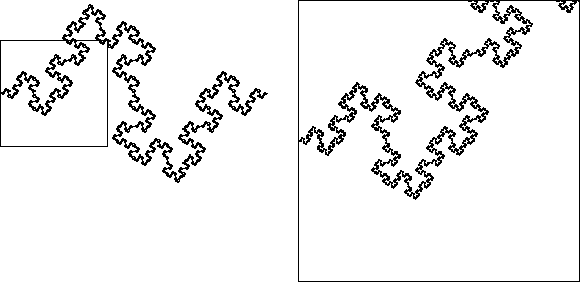
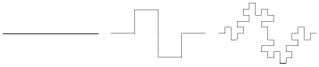

A Word about Fractals
| Benoit Mandelbrot coined the term fractal for shapes having the same degree of roughness over many length scales. |
| Zooming in on a smooth curve reveals a shape looking ever more like its tangent line, but zooming in on a fractal reveals approximately the same shape. |
|  |
| Fractal curves are most easily described as the limit of an iterative process. |
| For example, replacing a line segment by eight segments of one-quarter the original length and placed according to the pattern here begins a process whose limit is a fractal curve. |
|  |
| It is made up of eight copies of itself, each scaled by a factor of one-quarter. |
| Shapes made of smaller copies of themselves are called self-similar, their roughness is quantified by the similarity dimension |
| d = log(N)/log(1/r) |
| for fractals made of N pieces, each scaled by a factor of |
| For this example, we have |
Return to Background.